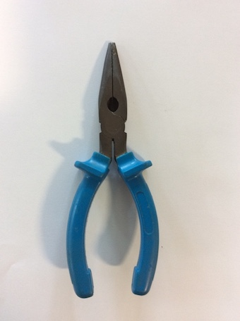
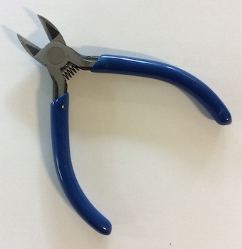
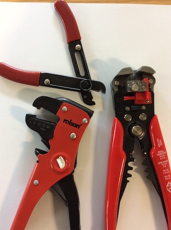
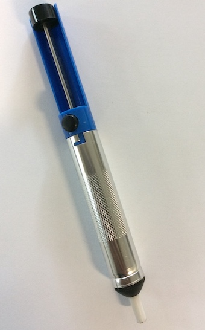
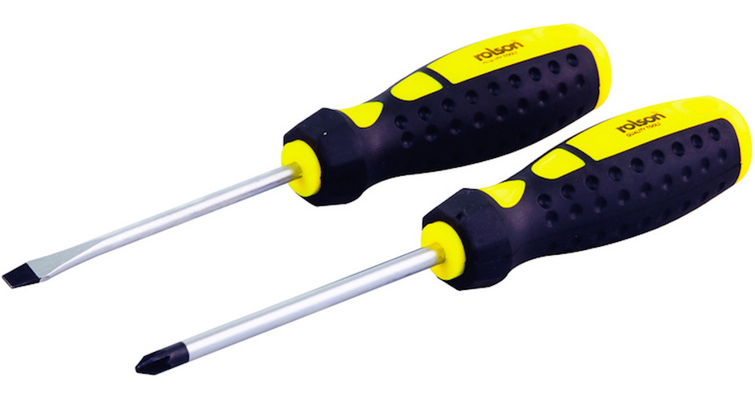
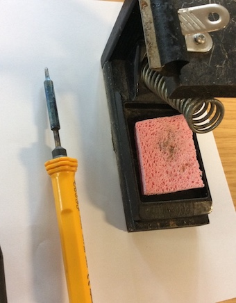
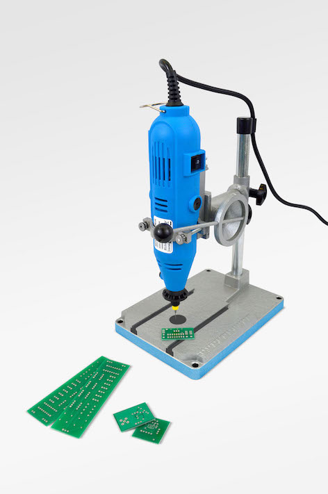
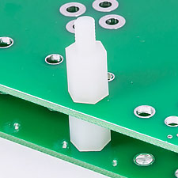
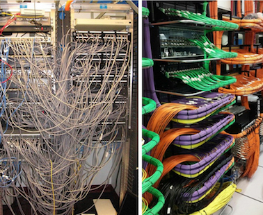
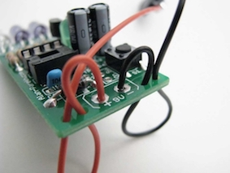

Processes for Fabricating a Prototype
Table of Contents
1 Tools and Equipment
- An engineer will need to use hand tools to make prototype products.
- These are the most commonly used hand tools used in making working circuits.
Needle nosed pliers
- Needle-nose pliers (also known as pointy-nose pliers, long-nose pliers, pinch-nose pliers or snipe-nose pliers) are both cutting and holding pliers used by artisans, jewellery designers, electricians, network engineers and other tradesmen to bend, re-position and snip wire. Their namesake long nose gives excellent control while the cutting edge near the pliers' joint provides "one-tool" convenience.
- Because of their long shape they are useful for reaching into small areas where cables or other materials have become stuck or unreachable with fingers or other means.

Side cutters
- These are used to cut thin wires and the legs off of components once they have been soldered.
- they have the cutting edge close to the one side so they can cut close to the PCB.

Wire Strippers
- A wire stripper is a small, hand-held device used to strip the electrical insulation from electric wires.

Solder Suckers
- A desoldering pump, colloquially known as a solder sucker, is a manually-operated device which is used to remove solder from a printed circuit board. There are two types: the plunger style and bulb style. (An electrically-operated pump for this purpose would usually be called a vacuum pump.)
- The plunger type has a cylinder with a spring-loaded piston which is pushed down and locks into place. When triggered by pressing a button, the piston springs up, creating suction that sucks the solder off the soldered connection. The bulb type creates suction by squeezing and releasing a rubber bulb.
- The pump is applied to a heated solder connection, then operated to suck the solder away.

Screwdriver
- A screwdriver is a tool, manual or powered, for screwing and unscrewing (inserting and removing) screws.
- There are many different types of screwdriver, the most common are:
- The Phillips head (this is a cross head)
- The flat head.

Soldering Iron
- A soldering iron is a hand tool used in soldering. It supplies heat to melt solder so that it can flow into the joint between two workpieces.
- The solder wire is an alloy of tin and lead and melts at around 180 degrees. The tip of the soldering iron heats up to around 300 degrees.
- This temperature is too low to damage the PCB in the short term, but if held there long enough will damage it. The PCB can handle up to around 1000 degree.

2 Machinery
CNC Milling
- CNC milling is the machining process of using rotary cutters to remove material from a workpiece by advancing (or feeding) the cutter into the workpiece at a certain direction.
- In electronics, we can use a CNC milling machine to cut tracks into a blank copper PCB. The machine will remove any excess copper, leaving only the necessary tracks.
PCB Drilling
- As the PCB holes are usually drilled at 1mm, this requires a more accurate drill that can hold the samll drill bit.
- A standard pillar drill will not be able to close enough to hold a 1mm drill bit.
- PCB drill are used for this.

Digital Design and Manufacture
- Computers are used to design and manufacture PCBs.
- We use Circuit Wizard to design and manufacture our PCBs.
- Circuit Wizard allows us to:
- Simulate the circuit to get a good idea if the circuit will work.
- Design and test(simulate) the PCB.
- Print of the PCB designs for manufacture.
- We also use SolidWorks to produce 3D models of the products we are going to make.
- SolidWorks alows us to:
- Design a 3D model of the product to test the parts will fit.
- Send the design to a CNC machine such as a laser cutter or 3D printed for manufacture.
- Advantages of computer modelling:
- You can test ideas without spending any money on parts.
- CNC machines can cut out parts more accurately and quickly.
- Disadvantages:
- The CNC machinery is very expensive.
- You will need specialist training to operate them.
- You will also need specialist software to use them which will also require training.
3 Shaping
Vaccuum Forming
- Vacuum forming is a simplified version of thermoforming, where a sheet of plastic is heated to a forming temperature, stretched onto a single-surface mold, and forced against the mold by a vacuum.
- This process can be used to form plastic into permanent objects such as turnpike signs and protective covers.
- Normally draft angles are present in the design of the mold (a recommended minimum of 3°) to ease removal of the formed plastic part from the mold.
CNC Laser Cutting
- Laser cutting is a technology that uses a laser to cut materials, and is typically used for industrial manufacturing applications, but is also starting to be used by schools, small businesses, and hobbyists.
- Laser cutting works by directing the output of a high-power laser most commonly through optics. The laser optics and CNC (computer numerical control)are used to direct the material or the laser beam generated.
- A typical commercial laser for cutting materials involved a motion control system to follow a CNC or G-code of the pattern to be cut onto the material.
3D Printing
- A drawing is made using 3D modelling software(SolidWorks) and then converted into a .stl file (StereoLithography file) which can be sent to the 3D printer for manufacture.
- 3D printing is any of various processes in which material is joined or solidified under computer control to create a three-dimensional object, with material being added together (such as liquid molecules or powder grains being fused together).
- 3D printing is used in both rapid prototyping and additive manufacturing (AM). Objects can be of almost any shape or geometry and typically are produced using digital model data from a 3D model or another electronic data source such as an Additive Manufacturing File (AMF) file (usually in sequential layers).
- There are many different technologies, like stereolithography (SLA) or fused deposit modeling (FDM). Thus, unlike material removed from a stock in the conventional machining process, 3D printing or AM builds a three-dimensional object from computer-aided design (CAD) model or AMF file, usually by successively adding material layer by layer.
Drilling
- Drilling is used to make a round hole in a materials.
- There are many different types of drills, here are some:
- Hand drills (battery operated and corded).
- Pillar drills.
- Bench top drills.
- Drills will cut a hole at 90 degrees to the work surface.
- It is possible to cut other shapes using a drill, this is called chain drilling.
4 Fabricating, Constructing and Assembling
PCB Mounting Methods
- Once you have made a PCB with all of its components attached, it wil need to be mounted into a case.
- You can not leave the PCB to rattle around in a case as this could lead to short circuits or damaged components.
- This will also help the product look more professtional.
- When mounting a PCB, you will need to remember the bottom of the PCB has soldered joints and tracks, this will need to be raised above the surface so as not to cause short circuits and damage, especially when the case is a metal construction.
- The most common way to mount a PCB is to use screws and plastic spacers to raise the board.
- Holes will be drilled in the appropriate places and the board will be screwed in place.
- There are ready made plastic mounts and fixing available, especially when it come to mass production.

Cable Managment
- When producing a PCB, there will inevitably be a lot of wiring. This will need to be managed safely and neatly.
- Loose cable will move around and can become dislodged and prevent the product from working, or even worse, cause a short circuit.
- We also need to consider whether the cable needs to move or not.
- Cable ties are a very good way of neatly managing cables, there are however, many other cable management systems.

- We also dont want a cable to be soldered directly to a PCB as this will create a weak point and the wire will most likely break loose.
- To prevent this, we drill strain relief holes which allow the wires/cable to run from under the PCB, making the stress move from the soldered joint.

- It is also a good idea to colour code cables to make them easier to identify after soldering and running the cable.
Wastage
- This is the process of removing any excess materials.
- When you have soldered in the components, you will cut off the excess component legs to make the PCB smaller and prevent shorting.
- The PCB can also be trimmed down to remove excess board. Hand tools will be used to do this, such as a saw or drill.
- Some products can be recycled. If you are turning on a lathe or cutting in a milling machine. The metal swarf can often be collected and recycled and then reused.
- This could save you money.
Addition
- Addition is the process that puts materials together to form the required shapes.
- Materials can be cut into shapes with hand tools and fixed together with joints, adhesives(glues), mechanical fixings(screws, nuts and bolts, rivets), and by heat, including soldering, brazing and welding.
- 3D printing is also an addition process, because plastic is added to build up the required design.
- Addition is an efficient use of material, as pieces are cut to the right size with little wastage.
- There are often lots of joins between pieces of materials, so it is difficult to make the product strong.
5 Practise Questions
Practice Questions
- Name 3 hand tools that will be useful in amking prottype PCBs.
- Suggest 2 things a computer could help with when designing or making electronic products.
- Gine an example of a product that would be created using a vaccuum former.
- Find out the best technique for soldering a joint with a soldering iron, describe the process.
- Give an advantage of wastage and an advantage of the addition process.